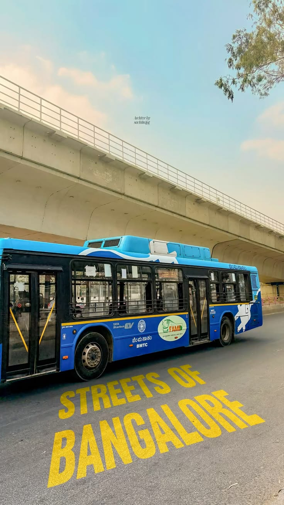

THINK
Ideas arrive messy. I capture the useful signal before it disappears.
12°58′44″ N / 77°35′30″ E
A city that moves fast taught me to move smarter.
SCROLL TO TRACE THE STORY ↓Not just where I'm from.
Bengaluru is a strange mix: old streets, new towers, endless traffic, ambitious people and an ecosystem where technology is simply part of everyday life. Growing up around that energy made “build something” feel less like a career choice and more like a natural instinct.

In a city full of tech people
I want the way I work to be different.
So I build systems that remember for me.
Ideas arrive messy. I capture the useful signal before it disappears.
Research, structure, challenge, explain. Let the machine take the repetitive weight.
If I do something twice, I start wondering whether software should do it instead.
Less ceremony. More finished things. Iterate once reality gives feedback.
Maybe I won't remember where I put the note.
But I'll remember why it mattered.
That makes standing out less about being the loudest person in the room — and more about having a different way through it.
06 / NEXT
Engineering. AI. Cybersecurity. Products. Maybe something I haven't named yet.
The point isn't to have it all figured out. It's to build fast enough to find out.
LET'S BUILD SOMETHING ↗